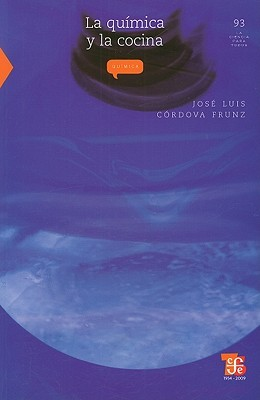

La química y la cocina
Reseña por Jorge I. Zuluaga

Ver reseña en GoodReads (necesita cuenta)
Soy un ñoño de las ciencias a quien también le gustan las lenguas antiguas y modernas, y encontré el libro muy entretenido. Sin embargo, debo confesar que tal vez la mayoría —en especial aquellas personas que se acerquen a él pensando que será una obra de divulgación ligera sobre aspectos químicos básicos de la cocina— se llevarán una sorpresa desagradable al descubrir un texto más pesado de lo que parece.
Para mí, una buena medida de cuándo un libro es intelectualmente retador es el tiempo que me toma leerlo en comparación con textos de su misma extensión. En este caso, a pesar de que se trata de una obra de apenas 250 páginas que en condiciones normales me tomaría uno o dos días completar, La química y la cocina me consumió una semana entera (sin mucho tiempo libre, debo confesar también). No quería perderme ningún detalle ni dejar pasar los datos fascinantes que su autor, el profesor José Luis Córdova, suelta a lo largo de las páginas.
Soy físico y, aparte de los cursos de química que vi en el colegio, nunca tomé una materia seria de esta disciplina en la universidad. Como resultado, siempre me ha parecido que tengo un vacío en mi formación como científico. Esto puede explicar por qué disfruto tanto con libros como La química y la cocina, que abordan estos temas de una forma relativamente seria.
En este volumen, el autor hace un recorrido erudito poriseis aspectos básicos de la química que tienen relación con la cocina: las sustancias de las que está hecho el mundo que nos rodea, especialmente los alimentos; la composición física y química de lo que consumimos; los procesos —también físico-químicos— que ocurren en una cocina típica; los instrumentos empleados; la química de sabores, olores y colores; y, finalmente, un popurrí de temas de sobremesa (digestivos, café, postres y hasta dentífrico).
Todos los temas están atravesados por interesantes referencias lingüísticas —la mayoría en notas al pie que, sin duda alguna, vale la pena revisar (no dejen de hacerlo si se animan finalmente con el libro)— y por sutiles pinceladas históricas y literarias. Se nota que el profesor Córdova es un hombre culto, con intereses que van mucho más allá de su especialidad.
Otro elemento muy original —y que delata la actividad de Córdova como profesor universitario— es que con frecuencia detiene la lectura para formular una pregunta capciosa: «¿Podrían usarse granos de maíz [en lugar de granos de arroz] en los saleros?», reza una de ellas. Por supuesto, no te deja sin la respuesta, la cual presenta justo a continuación en tipografía invertida, exigiéndote pensar la solución antes de voltear el libro.
El nivel de las explicaciones científicas es relativamente alto. Me descubrí en varias oportunidades releyendo un mismo párrafo, sorprendido de que ni siquiera mi formación en física fuera suficiente para entender cabalmente todo lo que se exponía. Creo que en algunos casos existían problemas reales de redacción y, en otros, el tema estaba tratado con un nivel técnico mayor del esperable en un texto de divulgación, requiriendo un contexto más amplio que el provisto por la obra.
Los dos últimos capítulos, «La cocina fuera de la cocina» —que trata sobre lenguas, etimologías y dichos humorísticos— y «La cocina cósmica» —sobre la composición del universo y del cuerpo humano—, me parecieron un poco fuera de lugar. Se sienten como agregados de última hora o secciones inconexas que el autor quería incluir a como diera lugar.
Como físico, sigue sin gustarme el tono que algunos profesionales de la química emplean para referirse a la supuesta universalidad de su área. Este es un debate —¿o debería decir una histórica pelea?— bastante viejo, y tal vez no valdría la pena entrar en minucias al cerrar esta crítica. Pero es mi reseña y no quiero perder la oportunidad de desahogarme.
Es cierto que lo que hoy llamamos física le debe mucho a la alquimia y a la química del pasado —a propósito, la etimología que propone el autor para la palabra química me parece equivocada, pues excluye el rol de Kemet (Egipto) que muchos eruditos reconocen—; sin embargo, esa pretensión de asumir que la termodinámica, la física nuclear, la atómica y la física de materiales —incluyendo las transiciones de fase y los estados de agregación— son meros capítulos de la química resulta un tanto presuntuosa. En la obra se siente ese tufillo de autosuficiencia que difícilmente soportamos quienes hacemos física.
Otra cosa que me incomoda de esa actitud —y que en este libro se nota bastante— es la idea tan extendida de que todo en el universo gira alrededor de las moléculas. Es obvio que la materia que nos rodea está hecha de colecciones de átomos enlazados mediante procesos descritos por las ciencias químicas; pero dar el salto de ahí a asegurar que «todo es química» sería equivalente a pensar que, como todas las personas nos vestimos, entonces el funcionamiento de la sociedad es un capítulo del diseño de modas.
Quejas profesionales aparte, este es un libro que disfrutarán enormemente las mentes ñoñas que, como yo, aman aprender cosas nuevas; y mucho mejor si se trata de un aspecto tan central en nuestras vidas como la alimentación, abordado de forma original y erudita.
¡No dejen de probar La química y la cocina!